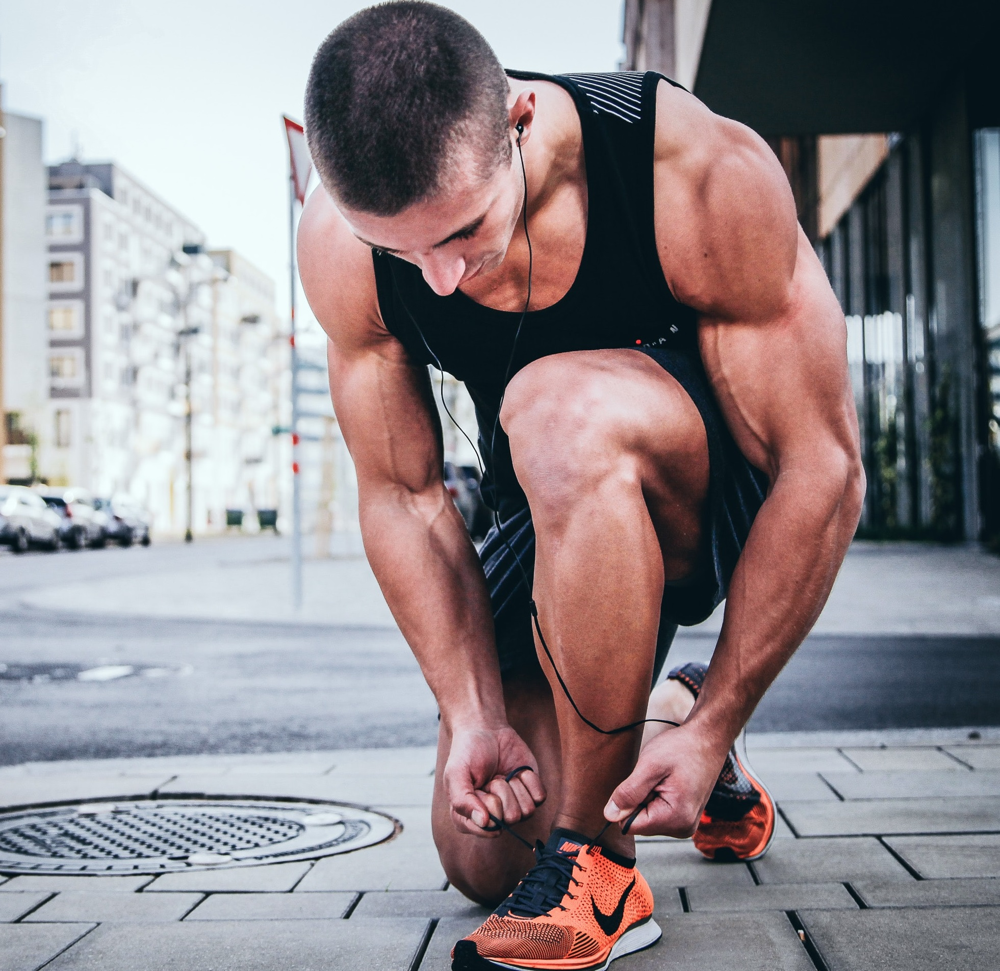

1. Daily Exercise :
Exercise daily for at least an hour. You do not have to kill yourself from running,
jogging, etc., but you should have some sort of moderate physical activity in your everyday life.
If you're looking to shed a few pounds fast, do a higher-level intensity workout. For example,
...
go on a walk at a brisk pace for an hour. Or, you can jog and set certain intervals to sprint
during that hour. Make sure you're not in severe pain during your workout. Just a warning,
your muscles will ache after a high intensity workout. It may be irritating, but that means
your body is changing for the better. Be sure to stay hydrated, stretch, and eat foods with a
decent amount of protein after each workout.
The protein will help keep your muscles, not fat, rebuilding.
2. Eat the Right Foods and Portion Each Meal
No matter how bad your stomach is telling you to go for candy over healthy food, try to stay away from sweets. Sugar from candy will not help you get in shape. Even if it's just a single candy bar, one will eventually lead to another. Fruits and vegetables are the best thing to eat when getting into shape. Apples, for example, do a good job at making the stomach feel full for up to 3 to 4 hours. Green vegetables such as green beans and broccoli keep the digestive system clean and running.
Also, stick to lean meats like turkey and chicken. Seafood, such
as, shrimp, and tilapia are also great alternatives. These foods are full of
protein and healthy nutrients to help keep muscles fit and ready for workouts.
In addition, be sure to portion what you eat. Having a good metabolism comes from portioning meals.
Try to plan out eating six times a day and setting smaller portions, rather than having three large meals throughout the day.
This will also help you find yourself breathing smoother when working out rather than huffing and puffing for air.
This is because you will have less food in your digestive system, which means more energy is used toward your exercise.
3. Keep Track of Calories and Food Intake Per Day
No matter how bad your stomach is telling you to go for candy over healthy food, try to stay away from sweets. Sugar from candy will not help you get in shape. Even if it's just a single candy bar, one will eventually lead to another. Fruits and vegetables are the best thing to eat when getting into shape. Apples, for example, do a good job at making the stomach feel full for up to 3 to 4 hours. Green vegetables such as green beans and broccoli keep the digestive system clean and running.
Also, stick to lean meats like turkey and chicken. Seafood, such
as, shrimp, and tilapia are also great alternatives. These foods are full of
protein and healthy nutrients to help keep muscles fit and ready for workouts.
In addition, be sure to portion what you eat. Having a good metabolism comes from portioning meals.
Try to plan out eating six times a day and setting smaller portions, rather than having three large meals throughout the day.
This will also help you find yourself breathing smoother when working out rather than huffing and puffing for air.
This is because you will have less food in your digestive system, which means more energy is used toward your exercise.
4. Be Sure to Get Sleep
Even though most of us have eight-hour jobs during the day or night, it is crucial to get
enough sleep to recharge the body's batteries. Six to eight hours of sleep will keep the
body going throughout the day, but if you happen to feel tired at any point after coming
home from work, by all means take a small nap before exercising. You should only nap for
about a half hour.
This will prevent you from staying up later in the night.
5. Stay Motivated
An important key to being in shape is to set goals and keep a positive mindset.
If you stay positive, you will
be able to push yourself to get that fit body you've always wanted.
Read more»